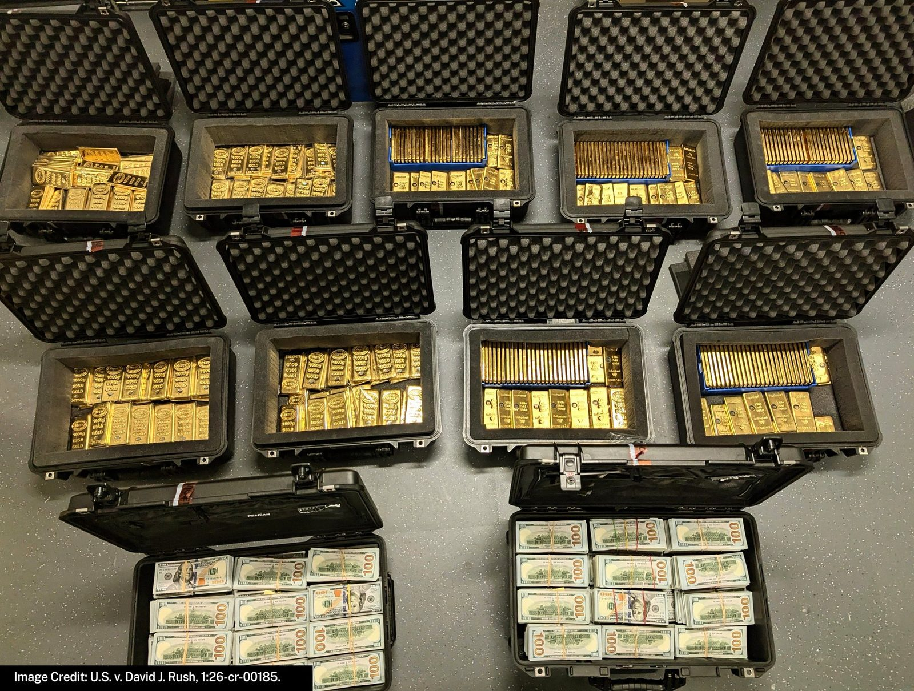

🚨🇩🇪 NEW: Germany’s former head of intelligence has been arrested on suspicion of treason and espionage [@Telegraph]
BREAKING: I'm told by DHS sources that the two suspects wanted for attempted murder in connection to the stabbing & robbery of an off-duty NYPD detective in NYC on Friday are both Dominican illegal aliens who were caught and released at the AZ border by the Biden administration & both have lengthy criminal histories in NYC, including an ignored ICE detainer.
Both suspects remain at large, and while NYPD hasn't officially released their names yet, @FoxNews is told they've been identified as 24-year-old SNEIDER MEJIA BAUTISTA and 25-year-old DANGELO RAFAEL JEAN CARABALLO.
I'm told that MEJIA BAUTISTA, a Dominican national, was arrested by Border Patrol after crossing the border illegally near San Luis, AZ on 12/2/2022 with his family, and they were all released into the country. He and his family have had deportation orders since 5/8/2025. I'm told that MEJIA BAUTISTA was arrested by NYPD in the Bronx for criminal possession of a weapon on 10/3/2025 and the next day, ICE filed a detainer on him, but the detainer was ignored and he was released from local custody. I'm told he was also arrested by NYPD on 1/7/2025 for criminal possession of stolen property.
I'm told that DANGELO RAFAEL JEAN CARABALLO, a Dominican national, was arrested by Border Patrol after crossing the border illegally near San Luis, AZ on 2/2/2023, and he was released into the country with a future court date. He has five prior arrests in NYC, but no ICE detainers were filed because he was released from custody so quickly each time. His priors include:
1/5/2024 - Arrested by NYPD for reckless endangerment, unlawful fleeing from police officer, and reckless driving
12/20/24 - Arrested by NYPD for being in possession of burglar's tools
6/4/2025 - Arrested by NYPD for criminal possession of a controlled substance
10/26/25 - Arrested by NYPD for criminal possession of a loaded firearm
7/10/2026 - Arrested by NYPD for criminal menacing involving a weapon
Per DHS sources, on each arrest, he was released so quickly that he was already out of custody by the time the feds knew about the encounters and couldn't put detainers on him in time.
893,000 food stamp households were collecting benefits for citizen children on behalf of illegal alien parents in fiscal year 2024. States built the loophole that makes it possible. New FGA research from @PolicyWithPaige. 🔗
Sanctuary City of New York caught and released them over and other and over again. The Democrat agenda is a campaign of subjugation and humiliation waged against the American People.
🚨 BREAKING: MASSIVE RIOTS and PALESTINE FLAGS are waving in Paris, riot police are STRUGGLING, foreigners are everywhere and leftists are going berserk
THIS IS AMERICA IF THE LEFTISTS WIN.
The Islamists are waving the Palestinian flag everywhere...FRANCE IS FALLING
TEAR GAS is now being deployed.
Hamas movements are "ACTIVELY INVOLVED" in the riots
Rioters are being chased everywhere, but I want to see more MASS ARRESTS
This is a total free for all! IT LOOKS LIKE A 3RD WORLD NATION.
What we see on X: Massive ethnic riots in France.
What normies see on the news: “Kids are demanding a better education.”
France is a multicultural hell. Take Macron and let him rot in prison.
▶ Watch on X🚨NEWS: It has been revealed that UK Government will remove anonymity from social media by requiring passport and credit checks to use all major platforms from March 2027
Former Federal Employee Pleads Guilty to Defrauding the Federal Government of Approximately $194 MILLION: Scheme Included the Fraudulent Acquisition of Tens of Millions of Dollars in Gold Bars and Luxury Properties in Florida
“Federal employees are entrusted with serving the American people, not themselves,” said @AGToddBlanche. “The Trump Administration is committed to rooting out waste, fraud, and abuse in the federal government, including by prosecuting those who foolishly defraud American taxpayers.”
🔗:

Biden FBI tracked Melania and Barron Trump's travel - and even tapped Susie Wiles phone, documents show https://t.co/RP1o6K3k3y
BREAKING: High-ranking CIA officer admits exposing information about a secret U.S. intelligence asset to a foreign official after agents found 600 pounds of gold bars in his home.
This was a seditious conspiracy against the Republic waged from within the Department of Justice and at the highest levels of government.
For decades, researchers have sought materials that sort electrons by spin while their magnetism cancels.
In 3 days, 90+ Opus 5.5 agents helped us uncover two room-temperature magnetic semiconductor candidates in simulations: YBaMnFeO₅ and KV[Cr(CN)₆].
KV[Cr(CN)₆] was synthesized back in 1999. Its predicted ability to sort electrons by spin appears to have been hiding in plain sight for 27 years.
Pulsar Fusion has achieved first plasma in its Sunbird fusion rocket exhaust system at its Bletchley facility in the UK.
The milestone marks a key step toward developing its planned fusion propulsion technology.
Sunbird aims to enable much faster travel through deep space than conventional rocket propulsion.
▶ Watch on XBREAKING: Hyundai says it tested two transactions on Avalanche, during and outside banking hours.
The proof of concept focused on real corporate processes, including internal compliance, controls and reconciliation.
Ripple Prime will now provide multi-asset prime brokerage, clearing and financing services to Brevan Howard, expanding our relationship with one of the world's leading alternative investment managers.
Read the full announcement to see how Ripple Prime is bringing traditional and digital markets together for institutional investors:
AI agents are getting their own Hedera wallets.
Set the rules. Define the limits. Let your agent handle the rest.
Introducing Hedera Agent Accounts 👇
Tokenization on Hedera: in 2025 @Aberdeen_plc, @LloydsBank, & @ArchaxEx executed the UK's first FX trades using RWAs as collateral.
.@USTreasury continues to transform how the federal government protects taxpayer dollars by using better data, stronger controls, and advanced technology to stop fraud and improper payments before money goes out the door.
In the past year alone, Treasury built and deployed new safeguards that verified more than $3.7 trillion in federal payments and increased Do Not Pay access from 4 percent of programs to 99 percent, ensuring agencies have access to the data they need. We are moving beyond ‘pay and chase’s and making prevention the federal government’s first line of defense.
BREAKING: 🇺🇸 S&P 500 just hit $71 TRILLION in total market cap for the first time in history.
500 US companies are now worth more than half of the entire world's economy.
August's Trade Deficit Tells Two Very Different Stories @RealPNavarro
Operation Economic Outcast is delivering results: the rial has plunged to record lows, Iran loaded zero crude oil onto tankers last month, and even Iran’s top security official has admitted the country is facing one of the most difficult periods in its history.
The Iranian regime allows its own people to suffer while it pours resources into terrorism. Operation Economic Outcast will not stop until the Iranian regime understands that the Trump Administration will never allow the regime to fund terrorism and develop a nuclear weapon.
Iran has a new oil minister.
Considering Iran has not loaded a single barrel of crude onto a vessel since August 25th, what is the oil minister managing?
JUST NOW: President Donald J. Trump signs an Executive Order to temporarily allow off-road “dyed” diesel for highway use, lowering costs for Americans.
This action will put money directly BACK in the pockets of American farmers, truckers, & workers. 🇺🇸
Anduril is investing $3.7B into Arsenal-2. The next great American Shipyard.
Democrats claim to care about fraud.
Yet under Tim Walz's watch, a $300 million fraud scheme stole money meant to feed kids.
Shaakir Mohamud Ibrahim has been indicted. His nonprofits got $1.1 million and he used it on a Chevy and real estate in Kenya.
Millions saved by blocking dead people payouts as Trump Treasury drops hammer on federal fraud
Early this morning, FBI Atlanta teams were on the ground executing enforcement actions tied to a major gang investigation.
Nearly two dozen individuals are facing federal charges for firearms trafficking and drug dealing.
More details to come after our 2:30 p.m. today with @ATFAtlanta @NDGAnews Stay tuned.
JUST IN: Texas launches investigation into Fruit of the Loom & Hanes over potential toxic chemicals in children’s underwear.
JUST IN: Anduril & U.S. Navy announce a $6,600,000,000.00 investment to dramatically expand submarine parts production.